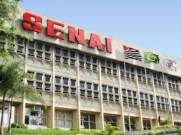
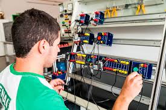
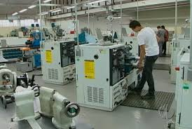
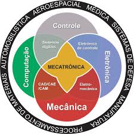

Senai
O que é o Senai?
O SENAI-SP tem a missão de impulsionar o aumento da competitividade da indústria por meio de ações de educação profissional, inovação, tecnologia, e empreendedorismo industrial. Com mais de 80 anos de atuação, o SENAI-SP supera 1 milhão de matrículas anuais, abrangendo desde cursos para a formação inicial profissional até a pós-graduação. São 90 unidades de formação profissional distribuídas em todo o estado de São Paulo, além de 78 escolas móveis, que levam soluções customizadas para a indústria.
A instituição também se destaca na oferta de soluções em inovação e tecnologia, desenvolvendo projetos de pesquisa, desenvolvimento e inovação (PD&I) e programas voltados para a melhoria da produtividade e competitividade das empresas. Na área de empreendedorismo, o SENAI-SP promove programas de aceleração de startups, inovação aberta, intraempreendedorismo e fomento à cultura inovadora, atendendo empresas de todos os tamanhos e setores.
Com o objetivo de promover o desenvolvimento sustentável do país, elevando a competitividade da indústria, por meio da educação profissional e da inovação e tecnologia.
Possuímos valores como:
1. Credibilidade e Integridade: atitudes pautadas na transparência e confiança. Respeitamos os princípios da justiça e da verdade.
2. Compromisso e Disciplina: trabalhamos de maneira organizada, empenhados com o alcance dos nossos objetivos.
3. Diversidade e Inclusão: É a soma das diferenças que promove enriquecimento cultural e estímulo à criatividade e à flexibilidade.
4. Excelência e Inovação: Incentivamos a geração de ideias que renovem e revolucionem serviços, processos e estratégias.
5. Agilidade e Responsabilidade: desejamos respostas rápidas, eficazes, sustentáveis e consequentes.
6. Valorização e Reconhecimento: estimulamos nossas pessoas, valorizando o “trabalho bem feito” e colaborativo.

Sobre os cursos técnicos em conjunto com o Sesi
Alunos que fazem o Ensino Médio no SESI-SP contam com a parceria do SENAI-SP para o Itinerário de Formação Técnica e Profissional. Os Cursos Técnicos preparam os alunos para o mercado de trabalho, por meio de capacitações de até dois anos que integram teoria e prática nas principais áreas da indústria.
Aqui terá informações sobre os cursos técnicos da unidade Senai Nami Jafet (Mogi das Cruzes) em conjunto com o Sesi:
Técnico em Desenvolvimento de Sistemas
O Curso Técnico em Desenvolvimento de Sistemas tem por objetivo habilitar profissionais para desenvolver, testar e implantar sistemas computacionais, atendendo normas e padrão de qualidade, usabilidade, integridade e segurança da informação.
Possui carga horária de 1200 horas, e visa especializar em pontos como a Programação - Lógica de Programação e Algoritmos; Sistemas Operacionais; Levantamento de Requisitos; Levantamento de Requisitos; Banco de Dados; Programação Back-End; Programação Front-End;
Programação para Dispositivos Móveis; Internet das Coisas (IoT); Testes de Software; Projetos de Software. - no curso. O aluno precisa terno mínimo 14 anos de idade.

Técnico em Eletroeletrônica
O Curso Técnico em Eletroeletrônica tem por objetivo habilitar profissionais para desenvolver projetos, atuar na implementação e na manutenção de sistemas eletroeletrônicos de baixa tensão, alinhados à conectividade, eficiência energética e a inovação, considerando a legislação, as normas, os padrões e os requisitos técnicos, de qualidade, meio ambiente, saúde e segurança no trabalho. Possui 1200 horas de curso e precisa ter acma de 14 anos.
As unidades são:
Fundamentos da Eletroeletrônica
Ferramentas Digitais para o Mundo do Trabalho
Linguagens em Multimeios
Performance Profissional e Pessoal
Implementação de Sistemas Eletroeletrônicos Prediais
Implementação de Sistemas Eletroeletrônicos Industriais
Implementação de Sistemas Eletrônicos Industriais
Processos de Implementação de Sistemas Eletroeletrônicos
Manutenção de Sistemas Eletroeletrônicos Prediais
Manutenção de Sistemas Eletroeletrônicos Industriais
Manutenção de Sistemas Eletrônicos Industriais
Supervisão da Manutenção de Sistemas Eletroeletrônicos
Projeto de Sistemas Eletroeletrônicos Prediais
Projeto de Sistemas Eletroeletrônicos Industriais
Projeto de Circuitos Eletrônicos Industriais

Técnico em Fabricação Mecânica
O curso Técnico em Fabricação Mecânica tem por objetivo habilitar profissionais para atuar no planejamento, na coordenação e na operacionalização dos processos de fabricação mecânica, a nível tático e operacional, conforme a legislação vigente e as normas específicas de saúde e segurança do trabalho, de meio ambiente e de qualidade. Possui 1200 horas de curso e precisa ter acma de 14 anos.
Visa especializar os alunos:
COMUNICAÇÃO EM MULTIMEIOS
METROLOGIA
DESENHO TÉCNICO
CÁLCULO TÉCNICO
TECNOLOGIA DOS MATERIAIS
PROCESSOS DE USINAGEM
PROCESSOS DE FABRICAÇÃO MECÂNICA
SISTEMAS MECÂNICOS
PROGRAMAÇÃO E OPERAÇÃO DOS PROCESSOS DE FABRICAÇÃO
GESTÃO DOS PROCESSOS DE FABRICAÇÃO MECÂNICA
GESTÃO DE PESSOAS
PROJETOS

Técnico em Mecatrônica
O Curso Técnico de Mecatrônica tem por objetivo habilitar profissionais para implementar e manter máquinas e equipamentos automatizados, bem como atuar no desenvolvimento de sistemas automatizados de manufatura, respeitando procedimentos e normas técnicas, de qualidade, de saúde e segurança no trabalho e de meio ambiente. É necessário ter mais de 14 anos e possui 1200 horas.
Ao completar o curso terão habilidades em:
Comunicação em Multimeios
Eletroeletrônica Aplicada a Sistemas Automatizados
Mecânica Aplicada a Sistemas Automatizados
Sistemas Eletropneumáticos e Eletro hidráulicos
Elementos Eletroeletrônicos e Acionamentos
Processos Mecânicos
Lógica de Programação
Controladores Lógicos Programáveis
Sistemas Embarcados
Tecnologia de Produção Mecânica
Integração de Sistemas Automatizados
Gestão da Manutenção de Sistemas Mecatrônicos
Projetos Mecatrônicos

Vantagem dos cursos profissionalizantes
O mercado de trabalho busca a cada dia profissionais mais qualificados. Por esse motivo, é preciso estar preparado tecnicamente e com uma formação atualizada. Esse é o papel do curso técnico: oferecer todas as ferramentas para qualificar mão de obra especializada e preparar para atender as empresas.
A conclusão de um curso técnico geralmente é entre um ano e meio e dois anos. Assim, muita gente cursa ainda durante o Ensino Médio para se formar na escola já apta ao mercado de trabalho e para iniciar uma graduação com experiência na área de atuação. Essa também é uma possibilidade para um profissional que deseja começar a mudar de profissão.